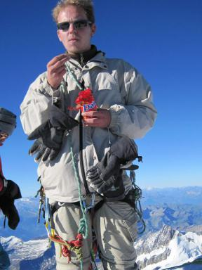

Current Lendület members
Róbert Szabó (PI)
KASC and TESS Working Group leader, K2 RR Lyrae Survey leader, Cepheids, RR Lyrae stars, hydro modeling

László Molnár
Gaia, hydro modeling, RR Lyrae stars, Cepheids, space photometry
Emese Plachy
Gaia, RR Lyrae stars, Cepheids, chaos, dynamical phenomena

András Pál
TESS-photometry
Zsolt Regály
Numerical modelling, visualization of large-scale data, simulations
Attila Bódi
Cepheids, Type-II Cepheids, RV Tauri stars, red supergiant pulsators, Kepler/K2 photometry
Internal Collaborators
György Mező
MTA Cloud system for data reduction, machine learning and other computation problems
External Collaborators
Katrien Kolenberg
(University of Antwerp (UA) and Katholieke Universiteit in Leuven (KU Leuven))
Expert on RR Lyrae stars, especially in spectroscopic and space photometric observation
Shashi Kanbur
(SUNY Oswego, Oswego, NY, USA)
Expert on pulsating variable star research, especially Cepheids and RR Lyraes
Ashish Mahabal
(Caltech’s Center for Data Driven Discovery)
Computational Scientist
Kelly Hambleton
(Villanova University, PA, USA)
Chair of the LSST Pulsating Star Working Group
Joshua Pepper
(Lehigh University, PA, USA)
Expert in time-domain astronomy
Andrew Tkachenko
(Institute of Astronomy, KU Leuven, Belgium)
Classification of variable stars in TESS and Galactic structure studies in SDSS-V
Dante Minniti
(Universidad Andrés Bello, Chile)
Determination of physical properties and distances of RR Lyrae stars and Cepheids using near-infrared data
Igor Soszyński
(University of Warsaw, Poland)
OGLE pulsating variable stars
Zoltán Szeleczky
(Wigner Research Centre for Physics, Budapest, Hungary)
Computer science engineer, MTA Cloud
Ferenc Török
(Wigner Research Centre for Physics, Budapest, Hungary)
IT engineer, MTA Cloud